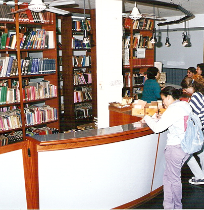

Conocenos
Fundada en 1924 por un grupo de alumnos de la entonces Escuela Nocturna para Adultos Nro 24 de nivel primario. Comenzó siendo biblioteca de grado para luego ser biblioteca de escuela y más tarde independizarse. En 1945 con el aporte de socios y vecinos se compra la actual propiedad; en 1946 se escritura.
A fines de 1990 se comienza la ampliación del sector de anaqueles, la construcción de dos aulas silenciosas, un espacio para internet y la oficina de clasificación y catalogación.
La institución fue sede y custodia de los libros de actas y tesorería de la Comisión Pro Autonomía del Partido de Berazategui acontecida el 4 de noviembre de 1960.
En las visitas escolares los chicos muchas veces preguntan: ¿Quién es el dueño de la biblioteca? Todos somos dueños.
Todos somos parte de la biblio.
Vos, yo, ustedes.
Somos todos
Somos uno.
Anuncio: Vacaciones de Invierno CERRADO desde el lunes 27 de Julio al sábado 1 de Agosto.